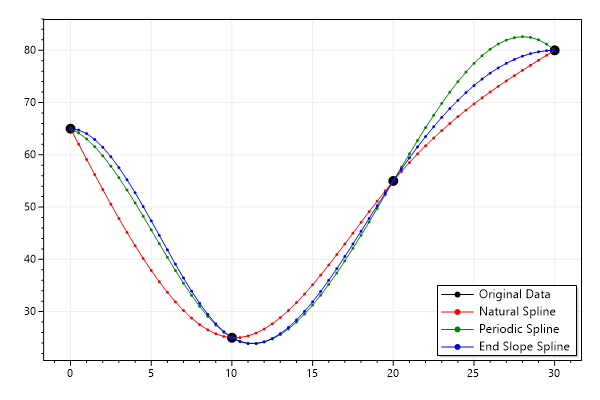
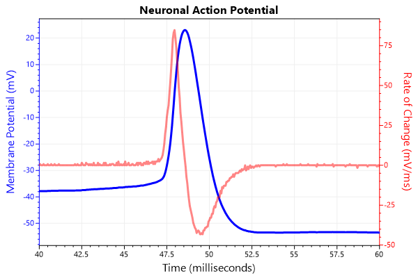

ScottPlot Cookbook: Misc
⚠️ Documentation is version-specific: This page was generated forScottPlot 4.1.4-beta
Additional documentation and more version-specific cookbooks are on the ScottPlot Website
Spline Interpolation
Interpolated splines create curves with many X/Y points to smoothly connect a limited number of input points.var plt = new ScottPlot.Plot(600, 400);
// create a small number of X/Y data points and display them
double[] xs = { 0, 10, 20, 30 };
double[] ys = { 65, 25, 55, 80 };
plt.AddScatter(xs, ys, Color.Black, markerSize: 10, lineWidth: 0, label: "Original Data");
// Calculate the interpolated splines using three different methods:
// Natural splines are "stiffer" than a polynomial interpolations and are less likely to oscillate.
// Periodic splines are natural splines whose first and last point slopes are matched.
// End slope splines let you define first and last data point slopes (defaults to zero).
var nsi = new ScottPlot.Statistics.Interpolation.NaturalSpline(xs, ys, resolution: 20);
var psi = new ScottPlot.Statistics.Interpolation.PeriodicSpline(xs, ys, resolution: 20);
var esi = new ScottPlot.Statistics.Interpolation.EndSlopeSpline(xs, ys, resolution: 20);
// plot the interpolated Xs and Ys
plt.AddScatter(nsi.interpolatedXs, nsi.interpolatedYs, Color.Red, markerSize: 3, label: "Natural Spline");
plt.AddScatter(psi.interpolatedXs, psi.interpolatedYs, Color.Green, markerSize: 3, label: "Periodic Spline");
plt.AddScatter(esi.interpolatedXs, esi.interpolatedYs, Color.Blue, markerSize: 3, label: "End Slope Spline");
plt.Legend();
plt.SaveFig("misc_interpolation.png");

Action Potential
The raw trace (voltage) and first derivative (voltage change / time) of a mammalian action potential.var plt = new ScottPlot.Plot(600, 400);
// obtain a signal for the voltage
double[] ap = DataGen.ActionPotential();
plt.Title("Neuronal Action Potential");
// data is sampled at 20 kHz but we want to display ms units
int sampleRate = 20;
plt.XAxis.Label("Time (milliseconds)");
// plot the voltage in blue on the primary Y axis
var sig1 = plt.AddSignal(ap, sampleRate);
sig1.YAxisIndex = 0;
sig1.LineWidth = 3;
sig1.Color = Color.Blue;
plt.YAxis.Label("Membrane Potential (mV)");
plt.YAxis.Color(Color.Blue);
// calculate the first derivative
double[] deriv = new double[ap.Length];
for (int i = 1; i < deriv.Length; i++)
deriv[i] = (ap[i] - ap[i - 1]) * sampleRate;
deriv[0] = deriv[1];
// plot the first derivative in red on the secondary Y axis
var sig2 = plt.AddSignal(deriv, sampleRate);
sig2.YAxisIndex = 1;
sig2.LineWidth = 3;
sig2.Color = Color.FromArgb(120, Color.Red);
plt.YAxis2.Label("Rate of Change (mV/ms)");
plt.YAxis2.Color(Color.Red);
plt.YAxis2.Ticks(true);
// zoom in on the interesting area
plt.SetAxisLimits(40, 60);
plt.SaveFig("misc_ap.png");
